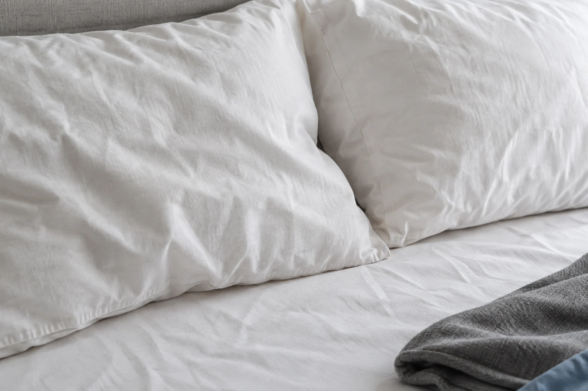

先記下
現在的床睡起來如何？平常慣用仰睡、側睡，還是經常換姿勢？
選床指南
不用先記材質名稱。先整理自己的睡姿、使用人數和床架條件，再把想確認的差異帶去試躺。



現在的床睡起來如何？平常慣用仰睡、側睡，還是經常換姿勢？
用熟悉的姿勢躺下，留意肩、腰、臀的感受。換款式時，盡量維持相近的枕頭高度與姿勢。
把感受分開描述，例如翻身順不順、哪些位置有承托，讓下一次比較有依據。
把兩人的睡姿、偏好、作息和目前困擾分開記錄，先理解彼此在意的事。
兩人一起試躺，分別觀察翻身、上下床時的感受，以及實際可用的睡眠空間。
量好床架與房間空間，再討論尺寸、款式和預算，避免只憑單一軟硬名稱決定。
由實際使用的人說明慣用姿勢與目前睡感，方便時一起到店比較。
記錄床架加床墊的總高度，實際感受坐床緣和上下床是否符合日常習慣。
把房間、床架及搬運條件一起提供給門市。持續的身體不適，請先尋求合適的專業協助。